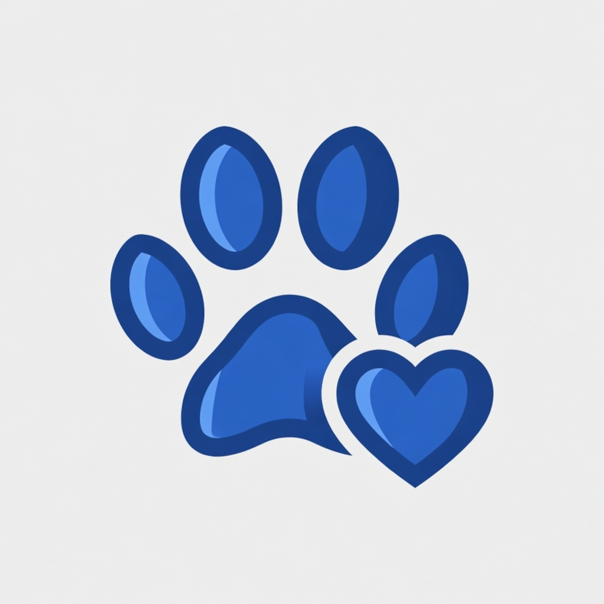

Weight & feeding
Log daily meals and weight trends so you notice changes early.

PawsLogTrack weight, feeding, and medical history for every pet — organized by groups, tags, and daily records.
Keep health notes close without cloud accounts or clutter.
Log daily meals and weight trends so you notice changes early.
Store visits, vaccines, and notes in one place per pet.
Organize multi-pet homes and filter with custom tags.